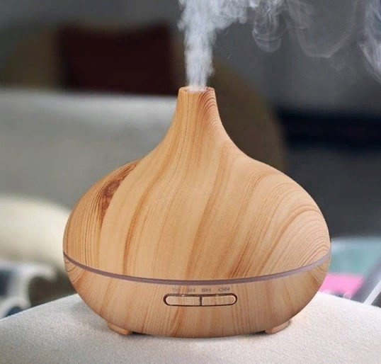
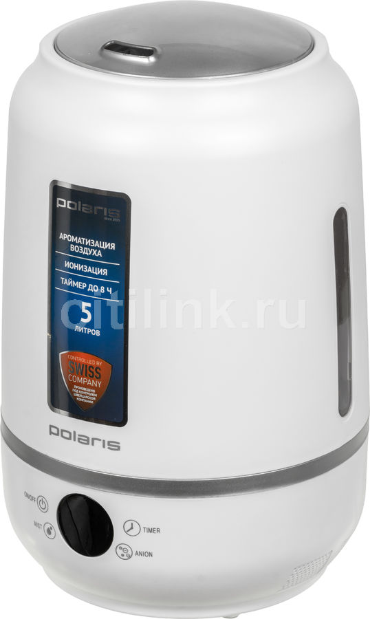

|  | Контактная информация: +79536082026 | ||||||||||
|---|---|---|---|---|---|---|---|---|---|---|---|
| Главная | О компании | Каталог | Доставка | Контакты | Обратная связь | ||||||
| Новости | Анонсы товара | ||||||||||
| 01.12.2022 | Увлажнитель воздуха ультразвуковой Polaris PUH 7205Di | ||||||||||
| Начало самого крупного розыгрыша! | 20/12/2023  Воздухоувлажнитель Polaris Puh 7205Di — устройство с тремя уровнями интенсивности подачи пара и встроенным ионизатором. Оснащено LED-дисплеем. Есть таймер автовыключения — до 8 часов. Рекомендуемая площадь помещения для этой модели равна 45 кв. м. Прибор поддерживает непрерывную работу на протяжении 35 часов. Уровень шума — около 45 дБ. Резервуар устройства вмещает до 5 л жидкости. Расходы воды составляет 300 г/ч. Прибор поддерживает ароматизацию воздуха. Встроенный гигростат постоянно измеряет относительную влажность воздуха в комнате, что позволяет поддерживать заданный параметр. Индикаторы на корпусе сообщают о включении прибора, уровне влажности, выбранном режиме работы и низком уровне воды. |
||||||||||
| 16.02.2022 | |||||||||||
| Последний месяц зимы!! | |||||||||||
| ©2022 Чувство свежести | Посещений 25998 |